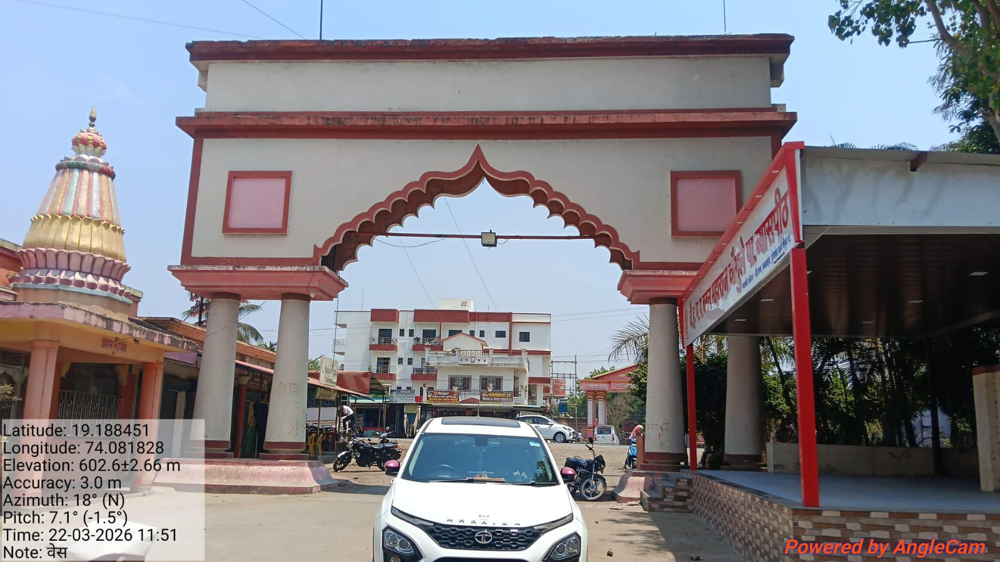
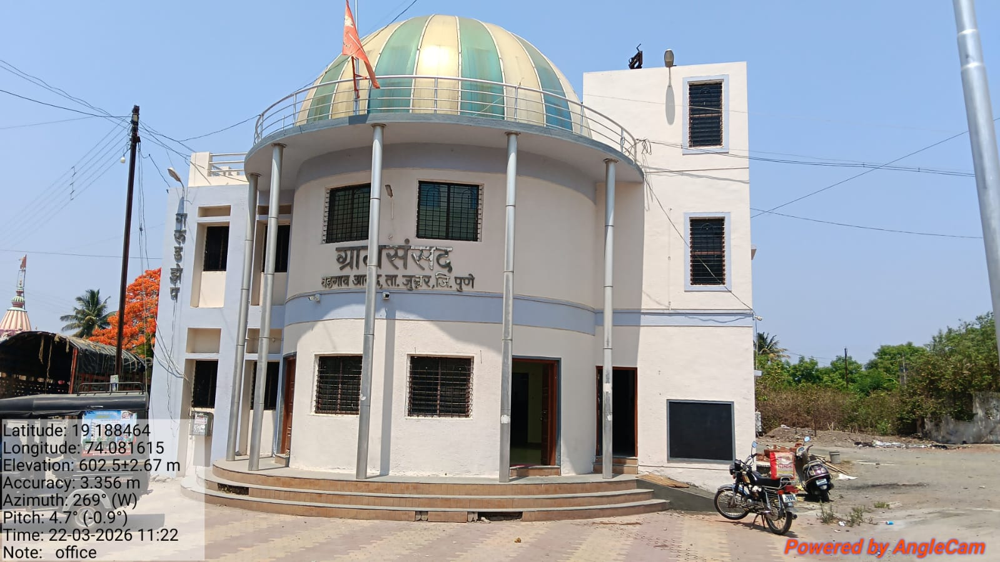
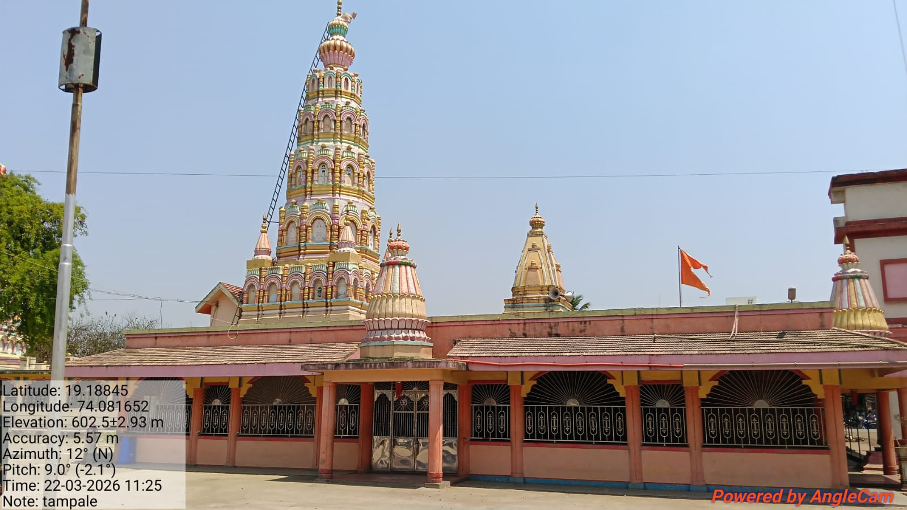
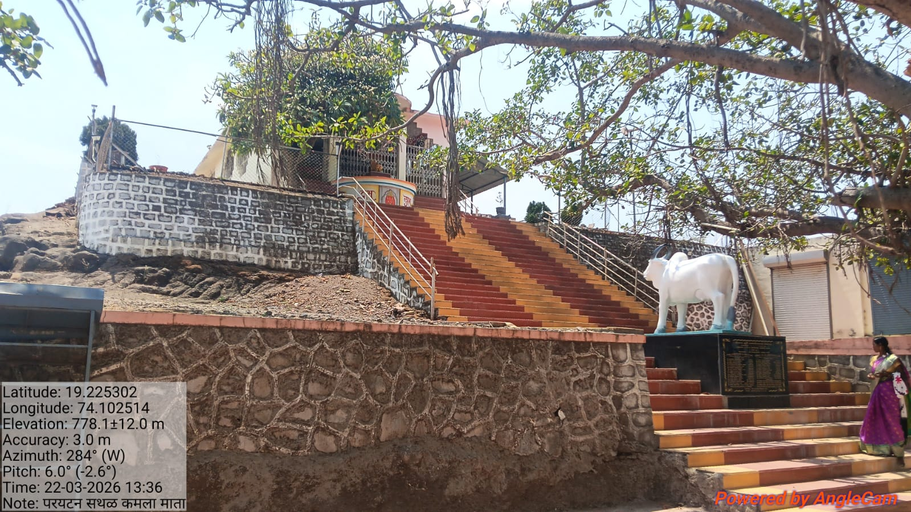

Taluka Junnar | District Pune | Maharashtra
Official Digital Portal of the Gram Panchayat
Vadgaon Anand Gram Panchayat is a progressive local governing body in Junnar Taluka, Pune district. The Panchayat focuses on rural development, sanitation, digital governance, and citizen welfare, aiming to become a model smart village under the Digital India initiative.
Population
Families
Literacy
Area
Register complaints related to water, roads, electricity.
Access information on rural development schemes.
Stay updated with latest announcements.

Entrance Gate

Gram Sansad Bhavan

Village Temple

Kalamjai Mata Tourism Site